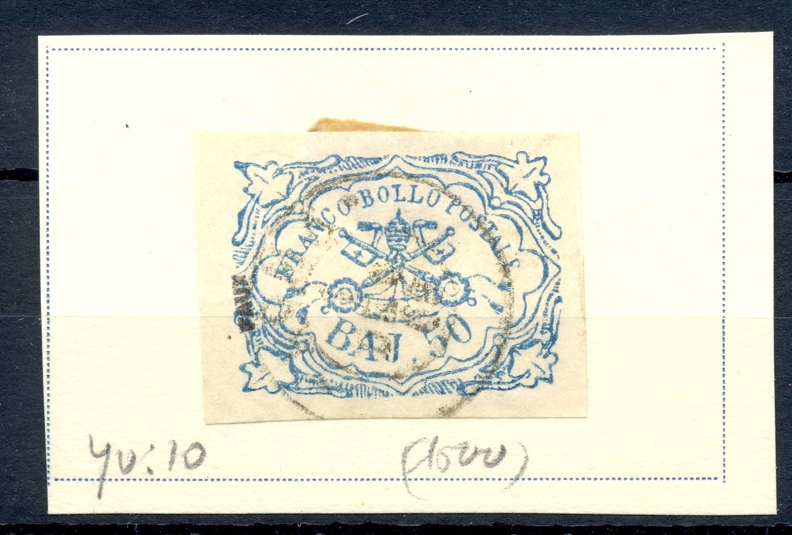
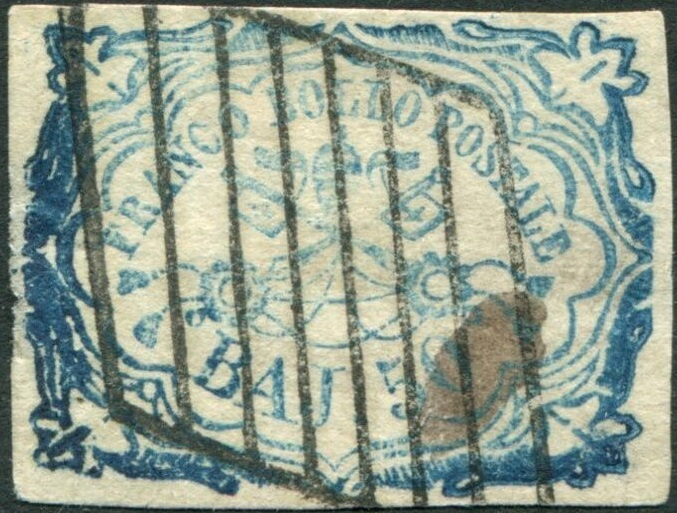
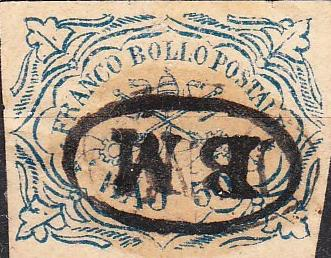

Genuine 50 b stamp
Stato Pontificio, Kirchenstaat, Etats pontificaux
Return To Catalogue - Papal States, 1851 issue, 50 b and 1 Sc values - Forgeries of the 1 Sc value - Other values of the 1851 issue - 1867 issue - Italy
Note: on my website many of the
pictures can not be seen! They are of course present in the
catalogue;
contact me if you want to purchase the catalogue.
For other values of the 1851 issue ,click here.
Genuine 50 b stamp
Specialists distinghuish two printings of the 50 b; the first printing is quite clear, the second printing is more defective. Example of the second printing:

Many forgeries exist of the 50 b and 1 S stamps. In the early 20 th century Album Weeds already distinghuishes 6 forgeries of the 50 b and 5 forgeries of the 1 B. Examples of forgeries:
The first of the above forgery also has framelines. The leaves in the corners are pointed too much outwards. I've only seen these Spiro forgeries with 'half' cancels; the cancels stop halfway as compared to the genuine cancels.

A blur forgery with the frameline joining the 'A' of 'BAJ' at the
bottom
(One of the forgeries of the Fournier album)
Sheet of 10 50 b Fournier forgeries from the Fournier Album, all
overprinted with 'FAUX'
The above stamp was offered by Fournier (at least a picture of a sheet of these stamps can be found in: 'The Fournier album of philatelic forgeries'). However, it is not in Fournier's 1914 pricelist. It is possible that Fournier bought these forgeries from another forger. There are many differences with the genuine stamp; for example the ornament coming out of the left lower leaf (going to the right) has completely disappeared in this forgery; the left foot-serif of the 'A' of 'BAJ' has also vanished. Also, there are three lines in the upper right hand leaf-shaped ornament; a genuine stamp only has 2 lines in it. It should be noted that Fournier did offer a better forgery in this pricelist (see under third forgery).
50 B forgery in wrong colour: green (image obtained thanks to
Richard Smallwood)

I've been told that this is also a Fournier forgery, though the
cancel cannot be found in 'The Fournier Album of Philatelic
Forgeries'
Forged Fournier cancels of Italy, taken from a Fournier Album;
reduced sizes. I've seen the 50 Baj Fournier forgery with one of
the above cancels (Roma 18 APR. 66')


The same forgery with a grill cancel and a cross cancel
Fournier forgery with a 'CALDAROL' forged cancel (listed under
Parma, see next image)
A modern forgery, apparently based on
the above forgeries
Page from a 'Fournier Album of Philatelic forgeries' with at the
bottom the fourth forgery and at the top right the third forgery
This forgery has a large extension to the upper left leaf ornament, the top part of the '5' is too short, the 'A' of 'POSTALE' is too small and the 'J' of 'BAJ' is not slanting enough to the left.


Fournier forgeries.

The same forgery as found in the Fournier Album.


There are rectangular frame lines in the above forgeries, genuine 50 b stamps never have such framelines.
In the genuine 50 b stamps, the pattern of lines below the '50' is broken up in two parts: the left part has 11 lines and the right part has 8 lines. Many of the forgeries do not show the 'hole' seen in the genuine stamps, such as the forgery above. Also the bar of the 'A' of 'BAJ' is slanting. Note that the 'A' is too close to the 'J'. The shading lines above the 'LO' of 'BOLLO' are in the wrong direction (slanting backwards). The second forgery was offered with certificate as being genuine for US$1250..... This forgery looks very similar to the fourth forgery, but is engraved?
The ornamental line above 'POSTALE' is too rounded, it does not
touch the 'S' of 'POSTALE'. Also there is no dot behind 'BAJ' in
the first forgery above. Note the very dense horizontal shading
in the upper left part


Forgeries apparently based on the sixth forgery type, but printed
better
The tail of the '5' is not wide enough in this forgery. The pattern of lines below the '50' not is broken up in two parts as in the genuine stamps. The lettering is different (compare for example the 'F' of 'FRANCO' with a genuine stamp) and the 'S' of 'POSTALE' is placed too far from the wavy line just above it. This forgery resembles the sixth forgery presented above, but there are some differences. For example, the pearl above the 'N' of 'FRANCO' has disappeared. I have seen this forgery with cancel.

Eight forgery of the 50 b


Front and backside of a 'proof' of 'Reproduction A' made by
Sperati of the 50 b value


Reproduction 'A': note that the position of the smeared lines is
always the same for these Sperati forgeries. The forged cancel
"ROMA 10 GIU 64" is applied as well as a grill cancel
on this particular forgery.
Sperati forged cancels 'ROMA 10 GIU 64' and 'ROMA 26 NOV 64'.


Sperati reproduction 'B' of the 'worn plate' second printing.
Note the defect on the right hand side of the 'B', the dot in the
right hand leg of the 'A' and the break in the 'J' of 'BAJ'.
Furtehrmore, the line in the bottom part of the '0' of '50'.
There is blue dot in the 'O' of 'FRANCO'.
The Sperati forgeries are lithographed instead of engraved and thus there is no 'impression' of the lines in the paper in his forgeries. Nevertheless, the details are very good, since a photograph of a genuine stamp was used to make his reproductions.
Two Peter Winter forgeries pasted on a letter. The letter is also
forged.
The forger Peter Winter also made forgeries of the 50 b value in the 1980's. I've seen it with a curved 'Annullato' cancel.
A forgery with the 'P' of 'POSTALE' different and many more small differences when compared to a genuine stamp.
The cancel on this first forgery is a bogus cancel. There is a large blotch on the lower left leaf. The two downwards pointed lines under the 'J' of 'BAJ' are not aligned as in the original. There is a blue line from the lower left leaf pointing upwards, which is not present in the genuine stamps (however, this line is not always present). The 'J' of 'BAJ' is slanting backwards and has almost no top serifs. I've seen this forgery with a numeral '8' cancel (squarish with bars).

The cancel "VITERBO 6 DEC 67" is identical to the one found in 'The Fournier Album of Philatelic Forgeries'. In the book 'Roman States Forgeries' by F.J.Levitsky and F.A.Jenkins this cancel was actually attributed to Venturini. It might have been that these two forgers have exchanged forgeries and forged cancel devices. Indeed, V.E.Tyler in "Philatelic Forgers, their Lives and Works' mentions that Venturini offers his printing plates for 20 Marks each. I've also seen this forgery with a grill cancel.
Forged Fournier cancels of Italy, taken from a Fournier Album;
reduced sizes. The third forged cancel is "VITERBO 6 DEC
67"

Forgery with no breaks in the pattern of slanting lines below the
'5' of '50'. The point of the inner frame line near the 'LE' of
'POSTALE' points more towards the 'L' of this word than to the
'E' (as in the genuine). The circle above the '0' of '50' is more
an ellipse. It was sold as being genuine....



Badly done forgery, it exists with various fancy cancels. It is
also shown in the book 'Roman States forgeries' by F.J.Levitsky
with a cancel consisting of lines. It has no dot behind
"BAJ".
With "10" cancel (reduced size)
The above forgery is shown in 'Philatelic Forgers' by V.E.Tyler and is attributed there to the forger Zechmeyer. I've seen a similar "BM" cancel on some forgeries of the 1859 issue of Uruguay:

Forgery type, not listed in the book 'Roman States Forgeries' by
F.J.Levitsky and F.A.Jenkins


Engraved forgery, it has some resemblance with Forgery type 6 and
7. I've only seen it with the above "FRRANCA" cancel,
probably part of "AFFRANCATA"

Rather primitive forgery with lines going in the wrong direction
in the right bottom.
Stamp, that I don't not quite trust (but it might be a very badly printed genuine stamp):
Stamps - Francobolli - Timbres-Poste - Briefmarken


{kind=link}
{kind=link}
{kind=link}
{kind=link}
{kind=link}
{kind=link}
{kind=link}
{kind=link}
{kind=link}